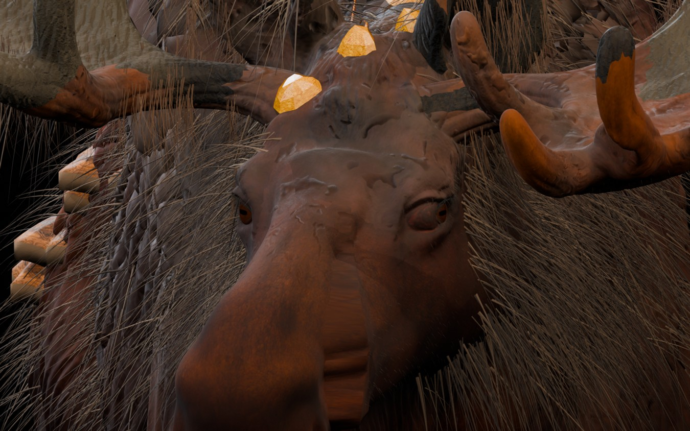

Лось V31I — исправлены оба глаза
Новые рендеры сделаны из настоящей отредактированной 3D-модели, а не из генератора картинок. Оба глазных яблока перемещены в центр собственных глазниц; поверхность глаз подогнана к контуру век. Исправлены вырожденные UV-полигоны кожи, из-за которых в V31G на правом веке были серые треугольники. Не затронуты рога, кристаллы, шерсть и исходные PBR-материалы. Нажмите на большой кадр для увеличения.

1 / 7 · Морда спереди
Клавиши ← / → меняют ракурс
Что поменялось относительно V31G
Сравните крупный ракурс справа: старый правый глаз располагался не по центру глазницы, а узкие полосы вокруг него имели некорректную UV-развёртку. В новой версии 204 полигонов век получили развернутые UV-координаты, а глазное яблоко физически подогнано к отверстию.